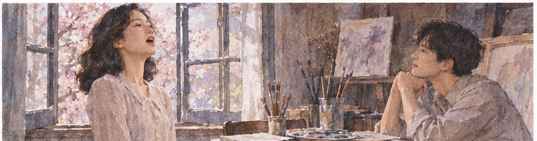
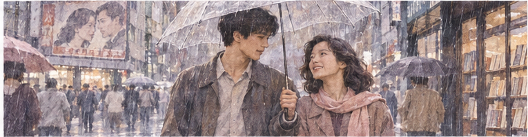
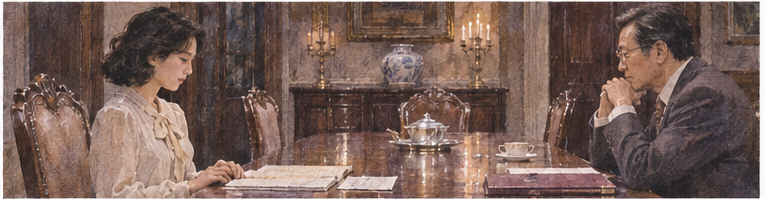
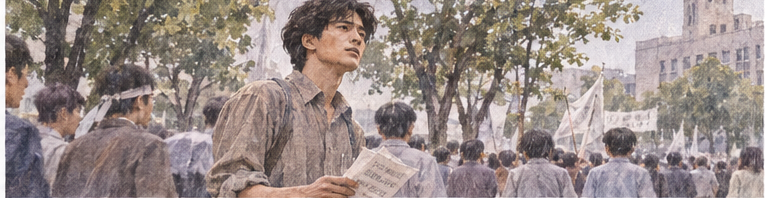
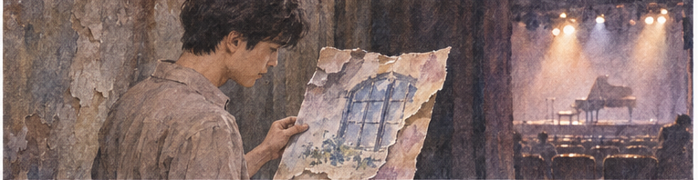
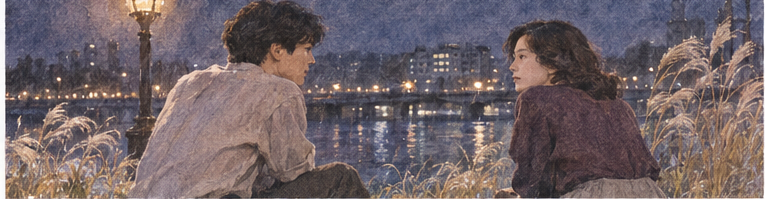
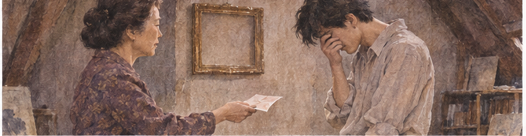
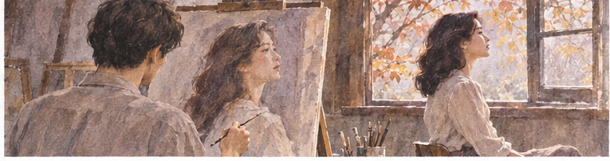
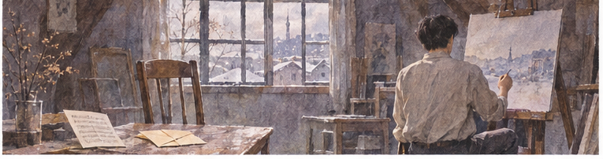

CHAPTER 01
프롤로그 · 붉은 벽돌의 계절
1987년 대구의 가을은 늦게 왔다. 낮에는 햇빛이 여름처럼 담장을 달구었고, 해가 지면 골목 끝에서 서늘한 바람이 올라왔다. 동성로의 화방에서 물감을 외상으로 산 박윤재는 남산동의 낡은 화실로 돌아왔다. 한쪽 창문은 제대로 닫히지 않았고 천장에는 지난 장마의 물자국이 남아 있었다. 그에게 그 방은 세상에서 가장 가난한 장소이자 가장 부유한 장소였다. 벽에는 팔리지 않은 그림이 기대어 있었고, 탁자에는 마르지 않은 붓과 어머니가 보내준 반찬통이 놓여 있었다.
그날 저녁, 복도에서 처음 듣는 노랫소리가 흘러왔다. 가사가 없는 발성 연습이었다. 그는 붓끝을 멈추었다. 소리는 누군가를 부르기보다, 아직 오지 않은 시간을 기다리는 듯했다. 윤재는 그림을 향해 고개를 돌렸으나 푸른 물감 위에 이미 한 줄의 선율이 내려앉아 있었다.
CHAPTER 02
제1장 · 노랫소리가 넘어온 벽
건물 이층 끝방에 새로 들어온 사람은 서미란이었다. 성악을 공부한다는 그녀는 아침마다 책을 펼치고 짧은 호흡으로 계단을 올랐다. 첫 인사는 공동 수도 앞에서 이루어졌다. 미란은 물이 찬 양동이를 내려놓고 윤재의 손을 보았다. 손톱 안쪽에 군청색 물감이 남아 있었다.
“그림을 그리시나 봐요.”
“아직은 그린다고 말하기도 좀 부끄럽습니다.”
“저도 노래를 한다고 말할 때마다 그래요.”
그들은 같은 건물에 살면서도 서로 다른 종류의 침묵을 지니고 있었다. 윤재에게 침묵은 빈 화폭이었고 미란에게는 노래 직전의 숨이었다. 며칠 뒤 미란은 화실 문 앞에 서서 그림 한 장을 보아도 되느냐고 물었다. 윤재는 급히 바닥의 신문지를 접었다. 그녀는 정작 그림보다 창가에 놓인 빈 의자를 오래 바라보았다. “여기는 누군가 앉아 있어야 완성될 것 같아요.” 그 말은 윤재가 듣지 못했던 자신의 그림에 대한 첫 해설이었다.
CHAPTER 03
제2장 · 푸른 물감과 오래된 악보

미란은 부유한 집안의 외동딸이었다. 그녀의 집에는 큰 피아노가 있고 아버지는 딸이 해외에서 공부해 품위 있는 무대에 서기를 바랐다. 그러나 미란은 누구의 계획 안에서 노래하고 싶지 않았다. 집에서 가져온 것은 낡은 악보 몇 권과 작은 전기주전자, 그리고 스스로 고른 생활의 불편이었다.
윤재는 생계를 위해 간판의 글씨를 쓰고 학교 행사장의 배경을 그렸다. 밤에 돌아와서야 자신의 그림을 그렸다. 어느 저녁 미란이 화실에 찾아왔을 때, 그는 오래전부터 완성하지 못한 푸른 그림 앞에 서 있었다. 미란은 악보를 펼치지 않은 채 낮은 음 하나를 길게 불렀다. 그 음은 좁은 방에서 여러 번 부딪혀 돌아왔다. 윤재는 그 소리가 끝난 자리에 노란빛 한 획을 놓았다. 둘은 웃었다. 그림이 음악을 흉내 낸 것이 아니었다. 서로 다른 두 사람이 같은 저녁을 발견한 순간이었다.
CHAPTER 04
제3장 · 비 내리는 동성로

첫 비가 내린 날, 윤재는 화방 아저씨에게 외상값을 갚지 못했다. 그는 주머니 속 동전을 세어보다 결국 화방 앞을 지나쳤다. 미란은 우산을 들고 길 건너에 서 있었다. 둘은 낡은 다방에 들어갔다. 유리창을 타고 빗물이 내려왔고 스피커에서는 오래된 노래가 흘러나왔다.
“노래를 잘하면 행복해질 거라 생각했어요.” 미란이 말했다.
“그림을 잘 그리면 세상이 알아줄 거라 생각했죠.” 윤재가 대답했다.
“그런데 꼭 그렇지는 않네요.”
윤재는 대답 대신 컵 속의 찻잎을 보았다. 바깥의 빗방울처럼 사람에게도 제 속도로 떨어지는 때가 있는 걸까. 다방을 나설 무렵 비는 가늘어져 있었다. 미란은 자기 우산을 윤재 쪽으로 조금 더 기울였다. 길 위의 둘은 어깨를 맞대지 않았지만, 멀리서 보면 한 장의 우산 아래 같은 방향으로 걸어가는 사람이었다.
CHAPTER 05
제4장 · 아버지가 정한 무대

미란의 아버지가 예고 없이 찾아왔다. 반듯한 양복 차림의 그는 화실 복도와 축축한 벽지를 한 번씩 훑어본 뒤 딸에게 돌아오라고 말했다. 독일 유학을 위한 면담 날짜도 이미 잡아놓았다고 했다. 미란은 아버지를 사랑했다. 다만 사랑한다는 이유로 자신의 삶을 미리 결정해도 되는 것은 아니었다.
“저는 아버지의 목소리가 아니라 제 목소리를 찾고 싶어요.”
아버지는 더 말하지 않고 돌아섰다. 미란은 오래도록 계단을 내려가지 못했다. 그날 밤 그녀의 노랫소리는 들리지 않았다. 윤재는 위로할 말을 찾다가 작은 종이에 창가의 화분을 그렸다. 꽃도 피지 않은 잎 두 장뿐인 그림이었다. 문틈 아래 밀어 넣은 종이 뒤에 그는 아무 이름도 적지 않았다. 다음 날 화실 앞에는 깨끗이 씻은 붓 한 자루가 놓여 있었다. 말없이 주고받은 물건들이 둘에게는 오래 남을 문장이 되었다.
CHAPTER 06
제5장 · 학교 강당의 불빛

윤재에게 지방 학교의 발표회 무대 배경을 맡아 달라는 연락이 왔다. 보수는 크지 않았지만 그는 흔쾌히 일을 받았다. 종이 도면을 그리고 색칠할 판을 재단하며, 윤재는 미술대학 시절을 떠올렸다. 다른 교사들의 부탁으로 수업 자료를 만들던 선배들의 이야기도 떠올랐다. 누군가에게 보이기 위한 그림과 누군가가 무언가를 이해하도록 돕는 그림은 때때로 같은 빛을 갖고 있었다.
미란은 공연장 빈 의자에 앉아 조용히 발성 연습을 했다. 윤재가 그린 먼 산 아래로 그녀의 목소리가 퍼졌다. 아이들은 무대 뒤에서 웃었고 교사들은 조명 위치를 바꾸느라 분주했다. 그 작은 공연이 끝난 뒤, 한 아이가 무대의 하늘은 진짜보다 더 따뜻하다고 했다. 윤재는 그 말이 어떤 미술평론보다 크게 들렸다. 돌아오는 길에 미란은 말했다. “당신 그림 속에서 노래하니까 두렵지 않았어요.” 윤재는 자신도 오늘 처음으로 그림이 누군가의 하루에 필요한 일이 될 수 있음을 알았다고 대답했다.
CHAPTER 07
제6장 · 팔리지 않은 초상

가을 전시를 앞두고 윤재는 미란의 초상을 그렸다. 그러나 정작 얼굴은 또렷하지 않았다. 창문에서 들어오는 빛과 어깨에 내려앉은 그림자, 악보를 잡은 손만 선명했다. 미란이 그림을 보고 물었다. “왜 얼굴을 안 그렸어요?”
“얼굴을 그리면 당신을 다 안다고 착각할까 봐요.”
전시장 한쪽 벽에 걸린 초상은 끝내 팔리지 않았다. 관객들은 색이 아름답다고 했고 누군가는 인물이 왜 흐린지 물었다. 미란은 한참 그림 앞에 있다가 고개를 끄덕였다. “사람을 다 알 수 없다는 걸 알면서도 곁에 있고 싶다는 뜻인가요?” 윤재는 대답하지 못했다. 그는 그 말을 그림 뒤편에 적어두었다. 그날 전시가 끝난 뒤 초상은 다시 화실로 돌아왔다. 그림을 걸 자리가 없던 좁은 방에서 그 그림만큼은 창가의 가장 밝은 벽을 차지했다.
CHAPTER 08
제7장 · 떠나야 하는 사람

미란에게 유학 허가 소식이 왔다. 기쁜 일이라는 것을 윤재도 알았다. 그러나 축하한다는 말을 꺼내자 입안이 말랐다. 미란은 며칠 동안 악보를 정리하고 사람들을 만났다. 여행 가방에는 겨울 외투보다 책이 많았다. 윤재는 그녀의 출국을 막지 않기로 했다. 대신 자신이 그리던 대구의 저녁을 완성하겠다고 마음먹었다.
둘은 신천을 따라 걸었다. 물 위에 건물의 불빛이 흔들렸다. 미란이 물었다. “우리가 다른 도시에 있어도 이 시간은 남을까요?” 윤재는 강물 아래로 가라앉는 불빛을 보았다. “시간은 남지 않을지도 몰라요. 대신 그 시간이 바꾼 우리는 남겠죠.” 미란은 한동안 아무 말도 하지 않았다. 헤어지기 직전 그녀는 연필로 악보 한 장의 여백에 짧은 문장을 적어주었다. ‘다시 부를 수 없는 노래도 마음속에서는 이어진다.’
CHAPTER 09
제8장 · 새벽의 기차역

떠나는 날 새벽, 역사의 유리창은 아직 검었다. 미란은 작은 여행 가방을 끌고 나왔고 윤재는 빈손이었다. 줄 수 있는 물건을 찾지 못했기 때문이 아니라, 그림 한 장에 이별을 묶고 싶지 않았기 때문이었다. 대신 그는 흰 봉투를 내밀었다. 안에는 물감 묻은 종이 조각이 있었다. 두 사람이 처음 만난 공동 수도의 빛을 그린 작은 습작이었다.
“이걸 왜 이제 줘요?”
“처음에는 보잘것없어서 버리려고 했어요.”
“그럼 잘 갖고 있을게요. 누군가의 처음이니까.”
열차의 안내 방송이 울렸다. 둘은 서로 안아주지 못한 채 마주 서 있었다. 어떤 작별은 말보다 오래 걸리고, 어떤 사랑은 붙잡지 않는 방식으로 증명된다. 미란이 승강장 안쪽으로 걸어 들어갔다. 윤재는 열차가 보이지 않을 때까지 그 자리에 있었다. 돌아오는 길, 새벽의 대구는 어제와 다르지 않았다. 그러나 그가 지나가는 모든 간판과 창문은 조금씩 다른 색을 띠고 있었다.
CHAPTER 10
제9장 · 빈 의자의 자리

겨울이 왔다. 화실 창문 틈으로 찬바람이 들어왔다. 윤재는 의자를 창가에서 화폭 앞으로 옮겼다. 누구를 기다리는 자리가 아니라 자신이 앉아 그릴 자리였다. 그는 학교에서 의뢰한 자료를 만들며 새로운 기술을 배우기 시작했다. 슬라이드와 화면에 그림을 옮기면 훨씬 많은 사람이 같은 장면을 볼 수 있다는 사실이 신기했다. 손으로 그린 장면이 다른 매체에 옮겨간다고 해서 그림이 사라지는 것은 아니었다.
미란에게서는 짧은 편지가 왔다. 낯선 거리의 벽돌색과 연습실의 차가운 공기를 적은 편지였다. 윤재는 길게 답장을 쓰지 않았다. 대신 새로운 그림 한 장의 사진을 봉투에 넣었다. 그림 속 빈 의자는 사라지고 없었다. 그 자리에는 문이 열려 있었다. 문 밖에는 겨울나무와 멀리 이어지는 길이 있었다.
CHAPTER 11
에필로그 · 노래가 머문 화실

세월이 흘러 윤재는 작은 모니터 앞에서 오래된 그림을 꺼내 보았다. 이제 그림은 종이와 캔버스에만 머물지 않았다. 화면에서 색은 움직였고, 글은 목소리가 되었으며, 한 장의 이미지는 다시 장면과 이야기로 자라났다. 그는 물감 냄새가 나는 화실에서 처음 들었던 노랫소리를 떠올렸다.
그가 다시 만든 것은 그날의 미란도 젊은 날의 자기 자신도 아니었다. 다시는 돌아오지 않을 시간을 복사하려는 마음이 아니었다. 그 시절이 자신에게 남긴 질문을 오늘의 언어로 대답해보는 일이었다. 그림은 무엇을 남기는가. 노래는 어디에 머무는가. 사람은 서로를 어떻게 바꾸는가.
윤재는 화면 속 마지막 문장을 천천히 고쳤다. ‘한 사람의 노래가 지나간 자리에, 다른 한 사람의 그림이 오래도록 빛을 받아 자랐다.’ 그리고 저장 단추를 눌렀다. 창밖에는 새벽이 밝아오고 있었다. 화실은 예전보다 넓어졌지만 그가 지키고 싶은 것은 여전히 한 사람의 목소리를 들을 수 있는 조용한 자리였다.